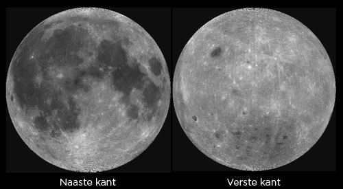
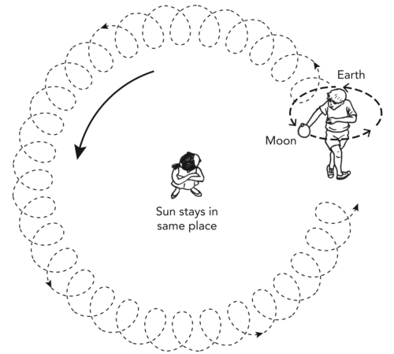
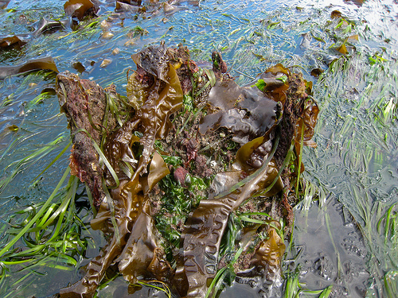
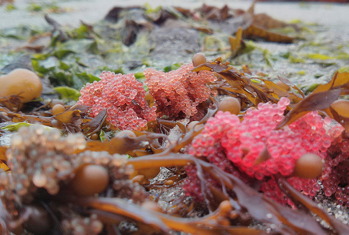

In Gr. 4 het die leerders die basiese feite omtrent die Maan gedek: die gebrek aan lug en water, sy grootte in verhouding tot dié van die Aarde en stand ten opsigte van die Son. Hulle het ook die fases van die Maan waargeneem. In Gr. 6 het leerders van die Maan se bewegings in die ruimte geleer: dit wentel om die Aarde terwyl dit om sy rotasie-as draai. In hierdie hoofstuk sal leerders die verband ontdek tussen die fases van die Maan en die relatiewe stand van die Aarde, Maan en Son. Hulle sal ook kennis maak met die begrip gravitasie (in meer detail gedek in Gr. 9: Energie en Verandering) en die uitwerking van die Maan en Son se gravitasie-aantrekking op die oseane van die Aarde, wat getye tot gevolg het.
Die hoofdoel van hierdie hoofstuk is om te sorg dat leerders die volgende verstaan:
Die Maan is kleiner as die Aarde en wentel in 27.3 dae om die Aarde, terwyl die Aarde om die Son wentel.
Die Maan word deur gravitasie in sy wentelbaan om die Aarde gehou. Net so word die Aarde en al die ander planete in die sonnestelsel deur gravitasie in wentelbane om die Son gehou.
Alle liggame ondervind gravitasie (of swaartekrag) en die grootte van die krag wat uitgeoefen word, word bepaal deur die massa van die voorwerpe en hul afstand van mekaar.
Bestudeer die foto's en teks en skryf 'n opsomming oor hoe twee verskillende organismes aangepas is om in die tussengetysone te oorleef. Jy kan die internet of ander bronne gebruik vir verdere navorsing.
Hersieningsvasvra oor die Maan
Opdragte
Vaardighede
Aanbeveling
Aktiwiteit: Hersieningsvasvra oor die Maan
Herroep, stel
Opsionele hersiening
Aktiwiteit: Neem die Maan waar
Waarneming
Is jy 'n goeie visserman?
Aktiwiteit: Algehele sonsverduistering
Waarneming, analise
Is jy 'n goeie visserman?
Let wel: Drie bykomende aktiwiteite vir hierdie afdeling is slegs in die Onderwysersgids ingesluit. Dit is:
Aktiwiteit: Google die Maan (plaasvervangeraktiwiteit vir 'Neem die Maan waar' indien rekenaars en internet beskikbaar is.)
Aktiwiteit: Fases van die Maan - prakties (opsionele uitbreidingsaktiwiteit, hersiening van Gr. 6-materiaal.)
Aktiwiteit: Maandlange waarneming van die Maan (opsionele uitbreidingsaktiwiteit, herhaling van die Gr. 6-aktiwiteit wat leerders herinner aan die fases van die Maan sonder om dit aan die relatiewe stand van die Son/Aarde/Maan te verbind.)
2.2 Gravitasie (2 uur)
Opdragte
Vaardighede
Aanbeveling
Aktiwiteit: Demonstreer die Maan se wentelbaan om die Aarde
Ondersoek, waarneming
KABV-voorstel
Aktiwiteit: Hoeveel sal jy op ander planete weeg?
Bereken, meet
Is jy 'n goeie visserman?
Let wel: 'n Bykomende ondersoek vir hierdie afdeling is slegs in die Onderwysersgids ingesluit. Dit is:
Ondersoek: Laat voorwerpe val (opsionele uitbreidingsaktiwiteit)
2.3 Getye (2.5 uur)
Opdragte
Vaardighede
Aanbeveling
Aktiwiteit: Lees 'n getytafel
Lees grafieke
Is jy 'n goeie visserman?
Aktiwiteit: Dans van die getye
Groepwerk, ondersoek, analise
Is jy 'n goeie visserman?
Aktiwiteit: Spring- en dooie getye
Waarneming, analise
KABV-voorstel
Aktiwiteit: Die uitwerking van getye op ekosisteme aan die kuslyn
Navorsing, analise, skryfwerk
KABV-voorstel
Aktiwiteit: Is jy 'n goeie visserman?
Analise van gegewens
Is jy 'n goeie visserman?
Let wel: Twee bykomende aktiwiteite in hierdie afdeling is slegs in die Onderwysersgids ingesluit. Dit is:
Aktiwiteit: Plakkaat van getye (opsionele pretaktiwiteit)
Aktiwiteit: Maak 'n getywiel (opsionele aktiwiteit)
Hoe lank neem dit die Maan om om die Aarde te wentel?
Wat hou die Maan in sy wentelbaan om die Aarde?
Wat veroorsaak getye op Aarde?
Die Aarde se enigste natuurlike satelliet word bloot die Maan genoem, omdat mense nie geweet het dat ander mane bestaan voordat Galileo Galilei in 1610 vier mane wat om Jupiter wentel ontdek het nie. Ander mane in ons sonnestelsel het nou almal name sodat hulle nie verwar kan word nie.
Die Maan is die opvallendste verskynsel in ons naghemel en boei al duisende jare lank die mensdom. Antieke kulture het rekord gehou van die sigbare beweging van die Maan deur die hemelruim, en op grond van die Maan se fases kalenders opgestel om die maande aan te dui. Trouens, sommige godsdienstige kalenders gebruik steeds 'n maangebaseerde (maan-) kalender eerder as die amptelike songebaseerde kalender wat tans in Suid-Afrika en die grootste deel van die Westerse wêreld gebruik word (die sogenaamde Gregoriaanse kalender). Die Maan se invloed op die Aarde is ook in ander opsigte belangrik, soos jy in hierdie hoofstuk sal ontdek.
'n Ruimtetuig, genaamd Ladee, is in 2013 gelanseer om om die Maan te wentel en inligting in te samel omtrent die maanomgewing. Kyk na hierdie infografika met sy uitvoerige inligting omtrent die sending.http://bit.ly/16C6HZ0
Ons Maan.
Kyk na die oorspronklike film van Apollo 11 wat in 1969 op die Maan geland het.http://bit.ly/185mzXG
Relatiewe stand
Maan
verduistering
Jy het in Gr. 4 en 6 van die Maan geleer. Kom ons kyk wat jy kan onthou!
Hersieningsvasvra oor die Maan
Hierdie aktiwiteit hersien die materiaal wat in Gr. 4 en 6 gedek is. Dit is 'n kort, opsionele aktiwiteit.
INSTRUKSIES:
Vul die ontbrekende gedeeltes van onderstaande Aarde-Maan-vergelykingstabel in deur van die woordbank gebruik te maak.
Woordbank:
klip, grond en water
klip en maangrond
weerkaats
absorbeer
Son
Aarde
wel 'n
geen
groter
kleiner
24
27.3
Die Aarde
Die Maan
Oppervlak bestaan uit
_____
Oppervlak bestaan uit _____
Is _____ as die Maan
Is
____ as die Aarde
Is sigbaar omdat dit lig wat dit vanaf die Son tref, _____
Is sigbaar omdat dit lig wat dit vanaf die Son tref, _____
Is in 'n wentelbaan om die _____
Is in 'n wentelbaan om die _____
Draai een keer elke _____ uur om sy eie as.
Draai een keer elke _____ dae om sy eie as.
Het ______ atmosfeer.
Het _____ atmosfeer.
Die Aarde
Die Maan
Oppervlak bestaan uit klip, grond en water.
Oppervlak bestaan uit klip en maangrond.
Is groter as die Maan
Is kleiner as die Aarde
Is sigbaar omdat dit lig wat dit vanaf die Son tref, weerkaats weerkaats.
Is sigbaar omdat dit lig wat dit vanaf die Son tref, weerkaats weerkaats.
Is in 'n wentelbaan om die Son.
Is in 'n wentelbaan om die Aarde.
Draai een keer elke 24 uur om sy eie as.
Draai een keer elke 27.3 dae om sy eie as.
Het wel 'n atmosfeer.
Het geen atmosfeer.
Die Maan is in werklikheid bedek met 'n laag 'maangrond' wat regoliet genoem word. Daarom kan ons die voetspore van ruimtevaarders op die Maan sien. 'Maangrond' se eienskappe verskil van die grond op Aarde, veral omdat aardse grond ook organiese materiaal bevat.
Kom ons beskou die oppervlak van die Maan van nader.
Neem die Maan waar!
In hierdie aktiwiteit bestudeer leerders die eienskappe van die Maanoppervlak in detail. Die foto's wys beelde van die sowel die gesig as die ander kant van die Maan, wat natuurlik heel anders lyk; moedig leerders aan om die twee te vergelyk.
Beelde geneem deur NASA se Clementine-ruimtetuig van die gesigkant en ander kant van die Maan. Kyk na die verskil tussen die twee beelde - wat merk jy op?
INSTRUKSIES:
Bestudeer die beelde van die Maan.
Beantwoord onderstaande vrae.
VRAE:
Is daar enige oseane en mere op die oppervlak van die Maan?
Nee, die oppervlak bestaan net uit soliede rots en maangrond (regoliet).
Wat bedek die grootste gedeelte van die Maan se oppervlak?
Kraters.
Sommige gedeeltes lyk donker en ander ligter. Die donker dele word maria (enkelvoud mare) genoem wat seë beteken, aangesien sterrekundiges oorspronklik gedink het dat daar seë op die oppervlak was. Die helder gedeeltes word hooglande genoem omrede hulle hoër as die maria lê. Aan watter kant van die Maan (gesig of ander kant) is meer donker gedeeltes (maria)?
Die gesigkant het meer maria.
In 1959 het die mensdom die eerste keer die ander kant van die Maan gesien toe die Sowjet-Unie die klein ruimtetuig Luna 3 gelanseer het. Dit was die eerste sending wat die ander kant van die Maan bereik het en dit kon fotografeer.
Dit is 'n opsionele aktiwiteit om met die leerders te doen as jy toegang tot die internet het. Jy kan dit as alternatief vir die vorige aktiwiteit, waar die foto's verskaf is, gebruik.
Hierdie aktiwiteit is 'n goeie manier om IKT in 'n wetenskaples in te sluit. Die Google Earth-programmatuur kan gratis direk op 'n rekenaar afgelaai word van die volgende adres: http://bit.ly/1h519Mj Die programmatuur bevat 'n interaktiewe kaart van die Aarde, die Maan en Mars. Deur na 'Moon mode' oor te skakel, kan leerders die oppervlak van die Maan in verstommende detail sien, dit draai, en in- en uitzoem op die kaart. Aanvullende inligting omtrent die ses Apollo-landingsplekke is ook beskikbaar met foto's en kort video's. Sowel lae- as hoëresolusiebeelde van die Maan kan bestudeer word saam met kontoerkaarte om die hoogte en diepte van die kraters te ondersoek. As julle nie toegang tot 'n rekenaar het nie, kan die leerders, as alternatief, 'n verskeidenheid foto's van die Maan gewys word.
MATERIALE:
Rekenaar
Google Earth-programmatuur (gratis afgelaai van die internet)
INSTRUKSIES:
Maak die Google Earth-programmatuur wat op rekenaar gelaai is, oop.
Skakel oor na 'Moon mode'.
Bestudeer die beelde van die Maan, roteer, zoem in en uit om na die oppervlak se eienskappe te kyk.
Lees die inligting omtrent die Apollo-sendings en ander sendings na die Maan.
VRAE:
Gebruik die Google Earth-maanbeelde om die volgende vrae te beantwoord.
Is daar enige oseane en mere op die oppervlak van die Maan?
Nee, die oppervlak is geheel en al soliede rots.
Wat bedek die grootste gedeelte van die Maan se oppervlak?
Kraters.
Sommige gedeeltes lyk donker en ander ligter; die donker gedeeltes word maria (enkelvoud mare) genoem, wat seë beteken, aangesien sterrekundiges oorspronklik gedink het dat daar seë op die oppervlak was. Die helder gedeeltes word hooglande genoem omrede hulle hoër as die maria is. Roteer die beeld van die Maan. Aan watter kant van die Maan (gesig of ander kant) is meer donker gedeeltes (maria)?
Die gesigkant het meer maria.
In watter mare of see het die Apollo 11-sending geland?
Die 'Sea of Tranquility' (Latyn: Mare Tranquillitatis), wat See van Kalmte beteken.
Die Aarde, net soos al die ander planete in die sonnestelsel, draai om die Son en voltooi een omwenteling elke jaar. Soos die Aarde om die Son beweeg het hy 'n metgesel in die ruimte: ons Maan!
Die tyd wat dit 'n voorwerp neem om een volledige omwenteling om 'n ander voorwerp, met betrekking tot die sterre, te maak, word die wenteltyd of sinodiese periode genoem.
Die Maan wentel een maal elke 27.3 dae om die Aarde. Ons Maan draai ook om sy eie as en ondervind dag en nag, net soos die Aarde. Die Maan draai egter baie stadiger as die Aarde en voltooi elke 27.3 dae een revolusie om sy as. Sien jy dat die Maan net so lank neem om om sy eie as te draai as om heeltemal om die Aarde te wentel? Dit beteken dat ons op Aarde altyd dieselfde kant van die Maan sien (die gesig). Die kant wat ons nie van die Aarde kan sien nie - die verste of ander kant - is gedurende die ruimtesendings na die Maan gekarteer.
Die sideriese of sterreperiode van die Maan is in die vorige paragraaf genoem, naamlik dat die Maan omtrent een keer elke 27.3 dae om die Aarde wentel. Dit moet nie verwar word met die Maan se sinodiese periode, wat 29.5 dae is nie. Die sinodiese periode van die Maan is weens die gelyktydige wenteling van die Aarde in sy baan om die Son, en dus neem dit effens langer vir die Maan om dieselfde fase na die Aarde te wys.
Die Maan roteer om sy eie as teen dieselfde tempo wat dit om die Aarde wentel. As dit een kwart draai om sy as voltooi, voltooi dit ook een kwart van sy wentelbaan. Dit het die gevolg dat dieselfde kant van die Maan altyd na die Aarde toe wys.
Die Maan draai om die Aarde teen 'n gemiddelde wentelspoed van omtrent 1 km per sekonde!
Van bo gesien, beweeg die Maan antikloksgewys of links om die Aarde. Die Maan se wentelbaan is nie 'n volmaakte sirkel nie, maar ellipties, dus wissel die Maan se afstand vanaf die Aarde soos dit om die Aarde wentel. Die gemiddelde afstand is omtrent 385 000 km, omtrent 60 keer die straal of radius van die Aarde. Vergelykenderwys is die Aarde se gemiddelde afstand vanaf die Son 149 597 871 km, of omtrent 23 481 keer die straal van die Aarde. Jy kan nou sien hoekom die Maan die Aarde se intieme metgesel genoem word!
In Gr. 6 het leerders aktiwiteite gedoen om die Maan se omwenteling van die Aarde voor te stel, terwyl die Aarde om die Son wentel. Jy kan hierdie inligting aanlyn sien by www.thunderboltkids.co.za. Hier is ook 'n skakel na die werklike inhoud: http://bit.ly/15wPXbE. Sien ook die afbeelding van die aktiwiteit indien jy dit met die leerders wil herhaal om die relatiewe posisie van die Aarde, Maan en Son vas te lê.

Diagram wat die Aarde se beweging om die Son en die Maan se beweging om die Aarde uitbeeld.
In die diagram is die Son en die afstand tussen die Son en Aarde nie volgens skaal nie; die Son is BAIE groter as in hierdie diagram en die afstand tussen die Son en die Aarde is ook BAIE groter.
'n Beeld van die Aarde en die Maan geneem deur die Galileo-satelliet onderweg na Jupiter, meer as 6 miljoen km ver. Die Maan se deursnee is net minder as 'n derde van die Aarde s'n. Jy kan die sonverligte kante van die Aarde en die Maan sien. Aan watter kant, dink jy, is die Son?
Die Son is aan die regterkant.
Die volgende tabel is 'n opsomming van nuttige inligting oor die Son, Aarde en Maan.
Eienskap
Son
Aarde
Maan
Relatiewe stand
Vorm die middelpunt van ons sonnestelsel
Wentel een keer elke 365.25 dae om die Son
Wentel een keer elke 27.3 dae om die Aarde
Rotasie
Draai rofweg een keer elke 28 dae om sy eie as
Draai een keer elke 24 uur om sy eie as
Draai een keer elke 27.3 dae om sy eie as
Afstand van omwentelde liggaam
-
23 481 aardstrale vanaf die Son
60 aardstrale vanaf die Aarde
Grootte
Deursnee is rofweg 100 keer die deursnee van die Aarde
Ons het nou gekyk na die relatiewe stand en beweging van die Aarde, Maan en Son. Kom ons brei hierdie kennis uit deur van 'n sonsverduistering te leer.
Algehele sonsverduistering
In hierdie aktiwiteit word die gedagte vasgelê dat die oënskynlike grootte van 'n voorwerp afhang van die afstand vanaf die waarnemer. Leerders sal vind dat, hoewel die Son baie groter as die Maan is, dit omtrent net so groot in die lug voorkom omrede dit baie verder as die Maan van ons af is.
INSTRUKSIES:
Kyk na die afbeelding hieronder. Dit toon 'n algehele sonsverduistering, waarvan julle in Gr. 6 geleer het. Dit vind plaas wanneer die Maan direk voor die Son verbybeweeg en die Son se lig versper. As die helder lig van die Son versper word, kan ons die baie dowwe buitenste rand van die Son se atmosfeer, die korona, sien. Normaalweg kan ons nie die korona sien nie omrede dit deur die helder lig van die Son verswelg word. As jy die grootte van die Maan in die lug vergelyk met die grootte van die Son in die lug, sien jy dat hulle feitlik ewe groot lyk. Ons noem dit die hoekgrootte. Dit is omdat die Maan veel nader as die Son aan ons is. Vanaf die Aarde kom die Maan groot genoeg voor om die Son se strale te versper.
'n Algehele sonsverduistering. Die Maan is voor die Son sodat ons die seldsame verskynsel van die Son se buitenste korona kan sien, met dun slierte atmosfeer wat in die ruimte uitstrek.
Hoe vergelyk die hoekgrootte van die Son en die Maan wanneer dit van die aardoppervlak beskou word?
Hulle is amper dieselfde.
Hoekom is dit so?
Hoewel die Son veel groter as die Maan is, is dit baie verder weg. Aangesien voorwerpe al kleiner voorkom hoe verder weg hulle is, lyk die Son kleiner as wat dit in werklikheid is. Die Maan lyk ook kleiner as in werklikheid, maar omdat dit baie nader aan die Aarde as die Son is, is sy sigbare grootte nie so erg verklein soos dié van die Son nie. Toevallig is die Son en Maan tans op 'n afstand waar hulle hoekgrootte, vanaf die Aarde waargeneem, dieselfde is.
'n Algehele sonsverduistering vind plaas as die Aarde, Maan en Son in 'n reguit lyn lê met die Maan tussen die Aarde en Son. Toevallig is die Son en Maan tans op 'n afstand waar hulle hoekgrootte, vanaf die Aarde waargeneem, dieselfde is. As die hoekgrootte van die Maan kleiner was, sou dit nie groot genoeg gewees het om die Son heeltemal te versper nie, en dan sou ons nie algehele sonsverduisteringe gehad het nie! Die skets hieronder dui die relatiewe oprigting van die Son, Aarde en Maan tydens 'n sonsverduistering aan.
Die Son, Maan en Aarde lê al drie in 'n reguit lyn gedurende 'n sonsverduistering. Die swart kol op die Aarde dui die area aan vanwaar 'n algehele sonsverduistering sigbaar sal wees. Hierdie gedeelte is in die Maan se donker skaduwee. Die grys gedeelte op die aardoppervlak is die area waar 'n gedeeltelike verduistering sigbaar sal wees.
Ons kry ook maansverduisterings. Dit is wanneer die Son, Aarde en Maan in 'n reguit lyn lê met die Aarde in die middel.
Vind uit hoekom die Maan rooi kan lyk gedurende 'n maansverduistering.http://bit.ly/1bImuND
'n Reeks afbeeldings wat die Maan tydens 'n volle maansverduistering toon.
Die diagram wys hoe 'n maansverduistering met 'n sonsverduistering vergelyk. In hierdie geval verhoed die Aarde die sonstrale om die Maan se oppervlak te bereik, wat veroorsaak dat die Maan donker in die naghemel vertoon.
Die Son, Aarde en Maan lê in 'n reguit lyn om 'n maansverduistering te kry.
Vind uit wanneer die volgende maansverduistering sal plaasvind.http://bit.ly/1fHY9aX
Die Maan beweeg stadig van die Aarde weg teen 3.8 cm per jaar (die Maan se wentelbaan word dus groter). Binne omtrent 563 miljoen jaar sal sy hoekgrootte in die lug soveel verminder het dat dit nie langer groot genoeg sal wees om algehele sonsverduisteringe te veroorsaak nie!
'n Nota omtrent die maanfases
Heel moontlik sal leerders vertroud wees met die veranderinge in die Maan se voorkoms in die loop van 'n maand, die sogenaamde maanfases. Al die fases van nuwemaan tot nuwemaan duur 29.5 dae, wat effens langer is as die tyd van een volle omwenteling van die Maan om die Aarde (27.3 dae). Dit gebeur omdat die Aarde in die 27.3 dae wat dit die Maan neem om om die Aarde te wentel, in sy eie wentelbaan verder beweeg. Om in dieselfde fase te verskyn soos deur 'n waarnemer op Aarde gesien moet die Maan effens meer as 360 grade om die Aarde beweeg, en om in 'n ry te kom vir 'n nuwemaan, neem omtrent twee ekstra dae.
http://bit.ly/16C8LQB vertoon 'n oulike animasie wat die verskil aandui tussen die wenteltydperk van die Maan, wat die sidereale of sterremaand (27.3 dae) bepaal, en die siklus van die maanfases, wat die sinodiese maand (29.5 dae) bepaal.
Waarnemers op Aarde sien dieselfde fase, waar hulle ook al op Aarde is. Die fases (behalwe nuwemaan en volmaan) lyk anders vir 'n waarnemer in die Noordelike Halfrond as vir een in die Suidelike Halfrond. Ons hier in die Suidelike Halfrond sien die Maan "onderstebo". Dit is belangrik om te onthou omdat \(\text{99}\)% van alle handboeke en aanlynverwysings die aansig van die fases van die Noordelike Halfrond insluit, en dit is nie wat leerders sal sien as hulle die Maan dophou nie. As leerders dít nie verstaan nie, sal hulle baie verward raak as hulle aanlyn en in generiese handboeke oplees.
Die aktiwiteit hieronder is 'n opsionele uitbreidingsaktiwiteit wat die relatiewe stand van die Aarde, Son en Maan met die waargenome fases van die Maan verbind.
Aktiwiteit: Fases van die Maan - prakties
Terwyl die Maan om die Aarde wentel, is die gedeelte wat na die Son gedraai is, altyd verlig, net soos die Aarde se dagkant deur die Son verlig word. Tog sien ons nie heeltyd hier op Aarde 'n halwe Maan wat verlig is nie. Ons sien eerder 'n verandering in die gedeelte van die Maan wat deur die Son verlig word.
Hierdie aktiwiteit gaan vir die leerders wys dat die relatiewe stand van die Aarde, Maan en Son bepaal watter fase van die Maan waargeneem word. Leerders gaan 'n lamp gebruik om die Son voor te stel. Die Aarde word voorgestel deur die leerders, en 'n polistireenballetjie op 'n potlood sal die Maan voorstel. Gebruik gerus lemoene as jy nie polistireenballetjies in die hande kan kry nie. Leerders gaan die posisie van die Maan in sy wentelbaan rondom die Aarde verander en só die Maan se fases waarneem. Vir hierdie aktiwiteit moet dit donker wees. Indien nodig moet die klaskamer met swartsakke of gordyne verdonker word. Plaas 'n lamp sonder skerm in die middel van die klaskamer om die Son voor te stel.
Die leerders moet verkieslik in pare aan hierdie aktiwiteit deelneem, sodat een leerder die waarnemings kan teken terwyl die ander een die bal op sy plek hou. Maak seker dat leerders die balle effens bokant hul koppe hou sodat hulle nie skaduwees oor die balle gooi nie. In hierdie oefening aanvaar ons dat die Aarde op een plek bly staan terwyl die Maan om die Aarde wentel.
Voor julle begin, verduidelik aan die leerders die name van die maanfases en teken dit op die skryfbord: nuwemaan (heeltemal donker), volmaan (heeltemal verlig), sekelmaan (hoofsaaklik donker), boggelmaan (hoofsaaklik verlig), eerste kwartier (linkhelfte verlig) en derde kwartier (regterhelfte verlig). [Let daarop dat die voorkoms van eerste en derde kwartier soos hier slegs vir die Suidelike Halfrond geld.]
MATERIALE:
potlood (2 per paar)
een lamp wat na alle kante kan skyn (dus 'n lampvoetstuk met 'n kaal 100 tot 150 watt-gloeilamp, sonder lampskerm)
polistireenballe (1 per paar)
swart plastieksakke (en kleefband) of gordyne om die klaskamer donker te maak
vel papier (1 per paar)
INSTRUKSIES:
Vir hierdie aktiwiteit werk julle in pare.
Plaas 'n lamp wat die Son voorstel in die middel van die klaskamer. Selfs al is die klaskamer groot, gebruik net een helder lamp in die middel van die klaskamer, anders sal daar skaduwees wees wat die resultate mag bederf.
Verdonker die kamer indien nodig deur swartsakke teen die vensters te plak of die gordyne toe te trek.
Steek een van die potlode in die polistireenbal en hou die bal aan die potlood vas. Hierdie bal stel die Maan voor.
Staan langs jou maat en vorm saam met die ander leerders 'n sirkel om die lig in die middel.
Kyk direk na die lig voor julle. Een van julle moet die bal 'n armlengte ver weg hou, effens bokant die kop, terwyl die ander een die potlood en papier het. Die persoon met die bal stel die Aarde voor.
Die een met die bal, beweeg dit van links na regs (sonder om self te beweeg). Kyk mooi watter gedeelte verlig word terwyl jy dit rondbeweeg. Laat jou maat dieselfde doen.
Kyk na die verskillende fases van die Maan wat die onderwyser op die skryfbord geteken het (nuwemaan, volmaan, eerste kwartier, laaste kwartier).
Een van julle hou nou die bal vas en beweeg dit tot waar dit uit julle oogpunt lyk asof dit heeltemal in die skaduwee is. Dit stel die nuwemaan voor.
Die persoon wat nie die bal vashou nie, teken nou die relatiewe stand van die Son, Maan en Aarde, en skryf neer watter fase van die Maan met hierdie stand ooreenstem.
Ruil rolle om, en die ander persoon beweeg nou die bal tot dit ten volle verlig is en soos 'n volmaan lyk. Die persoon sonder die bal, teken en skryf nou die relatiewe stand van die Son, Maan en Aarde neer.
Herhaal dit met al die fases wat in 8 genoem is.
Kyk na die sekelmaan op die swartbord. Vind uit hoe jy die bal kan hou sodat dit soos 'n sekel lyk (minder as die helfte verlig).
Ruil weer rolle om en vind hierdie keer uit hoe jy die bal kan hou sodat dit soos 'n boggel lyk (meer as die helfte verlig).
VRAE:
Hoe moet jy die Maan hou om 'n nuwemaan te sien?
Die Maan moet direk tussen die Son en die Aarde gehou word.
Hoe moet jy die Maan hou om 'n volmaan te sien?
Die bal moet regoor die Son gehou word, met die Aarde tussen die twee.
Hoe kan jy die Maan hou om 'n sekelmaan te sien?
Enige posisie so ver as 90 grade aan enige kant van die nuwemaan-posisie (na links óf regs.)
'n Ander opsionele aktiwiteit wat leerders in hul vrye tyd kan doen, is om die Maan vir 'n maand lank waar te neem. Hulle het moontlik reeds hierdie aktiwiteit in Gr. 6 gedoen, maar dit word hier ingesluit ingeval jy verkies om die maanwaarneming as addisionele aktiwiteit te laat doen.
Aktiwiteit: Maandlange waarneming van die Maan
Leerders kan hierdie aktiwiteit tuis doen. Dit neem 'n maand (30 dae) om te voltooi, dus kan dit gedoen word terwyl ander materiaal in die klas gedek word. Dit mag wees dat jy leerders daagliks sal moet herinner om hul waarnemings te maak. Begin die waarnemings tydens nuwemaan sodat leerders die fases van die Maan in volgorde kan waarneem. Die datums van nuwemaan kan aanlyn verkry word by http://aa.usno.navy.mil/data/docs/MoonPhase.php Sodra leerders al hul waarnemings afgehandel het, kan julle in die klas bespreek wat elkeen gesien het en jy kan vra waarom hulle dink die Maan se voorkoms verander.
MATERIALE:
Waarnemingskaart van die Maan
potlood
INSTRUKSIES:
Teken 'n waarnemingskaart met leë sirkels om elke dag se Maan voor te stel.
Gaan buitetoe en bekyk die Maan. (Jy kan dit in die dag doen of saans, afhangende van wanneer die Maan sigbaar is).
Staan elke keer op ongeveer dieselfde plek en kyk in dieselfde rigting (óf suid óf noord). Kyk van oos na wes en vind die Maan.
Teken die Maan deur die sirkels te verdonker om die vorm van die Maan in jou waarnemingskaart weer te gee.
Teken die datum en tyd van jou waarneming aan.
Hulp: As jy byvoorbeeld die hele Maan kan sien, hoef jy nie enige gedeelte van die sirkel te verdonker nie. As jy net die helfte van die Maan kan sien, verdonker die gedeelte van die Maan wat jy nie kan sien nie in die betrokke dag se sirkel. As jy op 'n dag glad nie die Maan kan sien nie, dui dit aan in jou joernaal en skryf ook neer waarom jy nie die Maan kon sien nie.
Gravitasie
Voordat die begrip gravitasie bekendgestel word, moet jy seker maak dat leerders heeltemal verstaan wat met 'n krag (stoot- of trekkrag) bedoel word. Gesels vlugtig oor 'n paar alledaagse voorbeelde van kragte wat leerders sal ken, soos 'n trollie wat by 'n supermark gestoot word, of vriende wat aan mekaar stamp of trek!
Streng gesproke, wanneer ons van gravitasie (swaartekrag) praat, verwys ons spesifiek na die gravitasie-aantrekking tussen die Aarde (of 'n ander hemelliggaam soos 'n planeet) en ander voorwerpe. Dit is in teenstelling met gravitasiekrag in die algemeen tussen enige twee voorwerpe met massa. Ons sal byvoorbeeld na die gravitasiekrag wat dinge na die Maan aantrek as die Maan se gravitasie verwys, maar nie gewoonlik die gravitasiekrag wat dinge na onsself aantrek as 'ons gravitasie' beskryf nie.
gravitasie
massa
gewig
versnelling weens gravitasie
gravitasiekrag
Die woord gravitasie word gebruik om die gravitasie-aantrekking (krag) te beskryf wat 'n voorwerp op of naby die oppervlak van 'n planeet of maan ondervind. Gravitasiekrag is 'n krag wat voorwerpe met massa na mekaar toe aantrek. Enige voorwerp met massa oefen 'n gravitasiekrag uit op enige ander voorwerp met massa . Dus oefen die Aarde gravitasie-aantrekking uit op jou, en op die lessenaars en stoele in die klaskamer wat alles op die grond hou en keer dat jy nie in die ruimte wegdryf nie.
Die Aarde se gravitasie trek alles af na die middelpunt van die Aarde en wanneer jy dus 'n voorwerp soos 'n boek of 'n appel laat val, val dit af grond toe. Maar besef jy dat jy, jou lessenaar, jou stoel, asook die appel en boek wat val, 'n gelyke maar teenoorgestelde aantrekkingskrag op die Aarde uitoefen? Waarom, dink jy, veroorsaak hierdie aantrekkingskragte nie dat die Aarde merkbaar beweeg nie?
Die Aarde het 'n veel groter massa as 'n persoon of 'n lessenaar, en dit word dus met 'n baie kleiner hoeveelheid versnel, al is die krag wat 'n lessenaar op die Aarde uitoefen net so groot soos die krag wat die Aarde op die lessenaar uitoefen (hoewel in teenoorgestelde rigtings). Dit is waarom die Aarde nie merkbaar beweeg nie.
Die pyle dui die rigting aan van die Aarde se gravitasiekrag op alle ander voorwerpe met massa. Die pyle wys almal na die middelpunt van die Aarde omdat gravitasie altyd 'n aantrekkingskrag is.
Doen hierdie simulasie om die verhouding tussen gravitasie en die massa van voorwerpe teenoor die afstand tussen hulle te sien.bit.ly/1dLLZMn
Gebruik die PhET-simulasie in die besoekkassie om maklik te demonstreer hoe die gravitasiekrag tussen twee liggame toeneem met massa, en afneem as die afstand tussen die liggame groter word. Jy kan die waardes afskakel, en die posisie van die figuurtjies wat aan die toue trek, gebruik om die verhoudings kwalitatief te demonstreer.
Die gravitasiekrag tussen twee liggame neem af as die liggame verder van mekaar wegbeweeg. As jy die afstand tussen twee liggame verdubbel, neem die gravitasiekrag tussen hulle met 'n faktor van vier af. As jy eweneens die afstand tussen hulle verdriedubbel, verminder die gravitasiekrag met 'n faktor van nege. Dit verduidelik hoekom ons aan die Aarde eerder as aan die Son vassit. Die Son is 333 000 keer groter as die Aarde en sy gravitasie is dus baie sterker as dié van die Aarde. Ons is egter so ver van die Son af dat die gravitasiekrag wat die Son uitoefen, baie kleiner is as die gravitasiekrag wat die Aarde op ons uitoefen.
Kyk na Felix Baumgartner se supersoniese vryval terug Aarde toe.bit.ly/15wRxKr
Die Maan word in 'n wentelbaan om die Aarde gehou deur die gravitasiekrag tussen die Aarde en die Maan. Eweneens hou die Son se gravitasie die Aarde in 'n wentelbaan om die Son. Kom ons doen 'n aktiwiteit om die Maan se wentelbaan om die Aarde te demonstreer.
Demonstreer die Maan se wentelbaan om die Aarde
In hierdie aktiwiteit moet leerders die wentelbaan van die Maan om die Aarde demonstreer met 'n bal wat aan 'n tou vas is en om hul koppe swaai. As hulle die tou laat los, sal hulle aantoon wat met die Maan sou gebeur indien daar geen gravitasie was nie.
Veiligheidswenk: Doen hierdie aktiwiteit buite of indien moontlik in die skoolsaal, sodat leerders kan uitsprei. Dit sal verhoed dat hulle mekaar tref as die balle gelos word. As dit nie moontlik is, nie moet hulle beurte maak om die demonstrasie te doen, of so nie moet slegs 'n paar leerders die demonstrasie doen sodat niemand deur 'n vlieënde bal getref word nie!
MATERIALE
tou
bal (tennisballe is ideaal)
INSTRUKSIES
Maak 'n bal aan die punt van 'n stuk tou vas. Jy sal dalk die tou 'n paar keer om die bal moet draai om dit vas te kry.
Hou die tou hoog bokant jou kop en swaai die tou in 'n horisontale sirkel.
Laat die tou los en kyk mooi wat gebeur.
'n Blik van bo af na 'n bal wat in 'n sirkel geswaai en toe gelos is.
VRAE:
Hoe sal jy die beweging van die bal wat jy in die rondte swaai, beskryf ?
Die bal beweeg in 'n volle sirkel om.
Die tou trek die bal na die middelpunt van die sirkel toe terwyl die bal al in die rondte beweeg. Watter krag hou die Maan in 'n wentelbaan om die Aarde?
Die gravitasie-aantrekking tussen die Aarde en die Maan.
Wat gebeur met die bal as jy die tou laat los?
As die tou gelos word, vlieg die bal in die rigting waarin dit beweeg het die oomblik toe die tou gelos is.
Wat stel dit voor met verwysing na die Aarde en die Maan?
Dit stel die gravitasie voor wat die Maan in sy baan om die Aarde hou. Daarsonder sal die Maan wegbeweeg uit sy baan.
Al die komponente in ons Heelal word deur gravitasie bymekaar gehou. Opsommend kan ons sê:
Hoe groter die massa van die voorwerpe, hoe sterker is die gravitasie-aantrekkingskrag tussen hulle.
Hoe nader voorwerpe aan mekaar is, hoe sterker is die gravitasie-aantrekkingskrag tussen hulle.
Verskuif die Son, die Maan en die ruimtestasie om te sien hoe dit hul gravitasiekrag en wentelbane beïnvloed.bit.ly/1fZGRGi
Gewig
Hierdie inhoud oor gewig is nie vir die Gr. 7-vlak in KABV voorgeskryf nie, en verskyn eers in Gr. 9 in KABV. Aangesien die leerders maklik massa en gewig verwar, is dit as verrykingsmateriaal op hierdie vlak ingesluit. Jy kan self besluit of jy hierdie inhoud met die leerders wil dek, of nie. Dit word nie in Gr. 7 geassesseer nie.
Die gewig van 'n voorwerp is die krag wat weens gravitasie daarop uitgeoefen word. Gewig verskil van massa, hoewel die twee woorde dikwels in die omgangstaal verwar word.
Die massa van 'n voorwerp is die hoeveelheid massa in daardie voorwerp, naamlik hoeveel hoeveel partikels daar is. Onthou jy dat ons kortliks van atome gepraat het in Materie en Materiale? So dui die massa van 'n houtblok byvoorbeeld vir ons aan hoeveel atome dit bevat. Massa word gemeet in kilogramme (kg) en is onafhanklik van waar jy dit meet. 'n Houtblok met 'n massa van 10 kg op Aarde het ook 'n massa van 10 kg op die Maan.
'n Voorwerp se gewig kan egter verander aangesien dit afhang van die massa van die voorwerp én van die krag van gravitasie wat daarop inwerk. Gewig word in newton (N) gemeet. Die Aarde oefen byvoorbeeld 'n gravitasiekrag van omtrent 10 newton uit vir elke kilogram massa op sy oppervlak. Op Aarde het 'n persoon met 'n massa van 50 kg dus 'n gewig van 500 N.
Die Maan het ook sy eie gravitasie. Die gravitasiekrag op die oppervlak van die Maan is 'n sesde van dié op Aarde, en dus sal jy op die Maan 'n sesde weeg van wat jy op Aarde weeg. Op Jupiter sal jy 2.5 keer meer weeg as wat jy op Aarde weeg omrede Jupiter se gravitasie 2.5 keer dié van die Aarde is. Selfs al sou jou gewig verskil (en jy ligter op die Maan voel en swaarder op Jupiter), sal jou werklike massa in albei gevalle dieselfde wees.
'n Ruimtevaarder se massa bly dieselfde waar dit ook al gemeet word. Die ruimtevaarder se gewig wissel egter na gelang van waar dit gemeet word. Soos jy kan sien, weeg die ruimtevaarder 1200 N op Aarde, maar net 200 N op die Maan.
Beantwoord die volgende vrae om jou begrip van massa en gewig te toets.
Lindiwe het 'n massa van 50 kg op Aarde. Wat is haar massa op die Maan?
50 kg, aangesien die massa van 'n voorwerp nie afhanklik is van plek nie.
Andrew het 'n massa van 60 kg op Aarde. Wat is sy gewig in newton op Aarde?
600 N (60 x 10)
Hoeveel weeg Andrew op die Maan?
100 N (60 x 10/6)
Sal Lindiwe swaarder of ligter op die Maan voel?
Sy sal ligter op die Maan voel, al bly haar massa dieselfde op die Maan.
Hoeveel sal jy op ander planete weeg?
In hierdie aktiwiteit, bereken leerders wat hul gewig op die ander sewe planete in ons sonnestelsel sal wees. Hoewel hul massa dieselfde bly, sal hulle ligter of swaarder 'voel' weens die verskille in die sterkte van die gravitasieveld op die oppervlak van die ander planete. Beklemtoon dat hul massa altyd dieselfde sal bly; dit is net hul gewig wat sal verander. As jy nie toegang het tot 'n badkamerskaal nie, kan jy óf die leerders vra om hul massa te skat óf jy kan 'n voorbeeldmassa noem.
MATERIALE:
badkamerskaal
sakrekenaar
INSTRUKSIES:
Meet jou massa in kilogram met behulp van die badkamerskaal. Vul die waarde in die onderstaande tabel in.
Kyk na die onderstaande tabel. Dit toon hoe sterk gravitasie op elke planeet in ons sonnestelsel is.
Bereken jou gewig op elke planeet en vul dit op die onderstaande tabel in.
Wenk: Op Aarde weeg elke kilogram 10 newton. As jou massa 50 kg is, weeg jy 50 x 10 = 500 N op Aarde. As die gravitasiekrag op 'n planeet die helfte is van die Aarde se gravitasiekrag, sal jy op daardie planeet die helfte weeg van wat jy op Aarde weeg.
Planeet
Jou massa (kilogram)
Gravitasiekrag met betrekking tot die Aarde
Jou gewig (newton)
Aarde
1
Mercurius
0.378
Venus
0.907
Mars
0.377
Jupiter
2.36
Saturnus
0.916
Uranus
0.889
Neptunus
1.12
Voorbeeldantwoorde vir 'n leerder van 50 kg
Planeet
Jou massa (kilogram)
Gravitasiekrag met betrekking tot die Aarde
Jou gewig (newton)
Aarde
50
1
500
Mercurius
50
0.378
189
Venus
50
0.907
453.5
Mars
50
0.377
188.5
Jupiter
50
2.36
1180
Saturnus
50
0.916
458
Uranus
50
0.889
444.5
Neptunus
50
1.12
560
VRAE:
Op watter planete sal jy swaarder voel as op Aarde?
Jy sal swaarder voel op Jupiter en Neptunus.
Op watter planete sal jy ligter voel as op Aarde?
Jy sal ligter voel op Mercurius, Venus, Mars, Saturnus en Uranus.
'n Nota oor vallende voorwerpe
'n Nuttige manier om die Aarde se gravitasie te demonstreer is om na vallende voorwerpe te kyk. 'n Opsionele uitbreidingsaktiwiteit waar die leerders verskeie voorwerpe laat val, volg hierna. Jy kan die klas laat stem om te sien of die leerders dink 'n appel of 'n pak suiker sal eerste die grond tref. (Antwoord: hulle sal terselfdertyd die grond tref solank lugweerstand onbeduidend is.) Dit is baie moontlik dat leerders die vooropgesette idee het dat swaarder voorwerpe vinniger val. Dit is nie nou belangrik dat leerders se antwoorde korrek is nie en moenie probeer om hulle na die regte antwoord te lei nie. Hulle sal dit hopelik vir hulself in die volgende eksperiment ontdek.
Ondersoek: Om voorwerpe te laat val
In hierdie ondersoek moet leerders in pare werk. Om mee te begin, gaan hulle 'n hele en 'n halwe appel gelyk van dieselfde hoogte laat val. Daarna sal hulle met balle waarvan die massa verskil (maar die grootte dieselfde is), en balle met dieselfde massa (maar verskillende volumes) eksperimenteer. Dit is baie moeilik om voorwerpe op presies dieselfde oomblik te laat val sodat hulle gelyktydig die vloer tref, dus sal die leerders die eksperiment verskeie kere moet herhaal totdat hulle tevrede is dat hulle die voorwerpe gelyk laat val. Indien van die leerders dit moeilik vind om te sien watter voorwerp eerste die grond tref, stel voor dat hulle na die aantal klanke luister - een of twee - as die voorwerpe die grond tref. Leerders mag dit nodig vind om hierdie eksperiment 'n hele paar keer te herhaal, aangesien dit bes moontlik hul vooropgesette idees weerspreek! Veiligheidswenk:Dit is moontlik 'n goeie plan om die appels vooraf in die helfte te sny.
Sodra die leerders klaar is met die eksperiment, kan jy die gevolge van lugweerstand demonstreer deur 'n hamer en 'n veer te laat val. Laat die leerders stem oor wat sal gebeur as die hamer en die veer val. Wees gereed om te verduidelik dat lugweerstand die veer se val vertraag; as daar geen lugweerstand was nie, sou die twee ewe vinnig geval en die vloer gelyktydig getref het.
ONDERSOEKVRAAG: Val verskillende voorwerpe teen dieselfde tempo?
HIPOTESE:
Wat, dink jy, sal gebeur?
Leerder-afhanklike antwoord.
IDENTIFISEER DIE VERANDERLIKES:
Wat word konstant gehou in hierdie eksperiment?
Die hoogte waarvan voorwerpe laat val word.
Wat verander jy in hierdie eksperiment?
Die soort voorwerpe wat laat val word, veral die massa en die volume van die voorwerpe.
MATERIALE EN APPARAAT:
hamer
veer
appels ('n hele en 'n halwe per paar)
mes (indien nodig om die appels in die helfte te sny)
twee balle met dieselfde massa, verskillende volumes (een stel per paar)
twee balle met dieselfde volume, verskillende massas (een stel per paar)
METODE:
Werk in pare, maak beurte om die een te wees wat 'n voorwerp laat val (eksperimenteerder) en die een wat die vallende voorwerp waarneem (waarnemer).
Vul die voorspellingskolom in die onderstaande tabel in.
Eksperimenteerder: staan op 'n stoel of lessenaar en neem 'n hele appel in die een hand en 'n halwe appel in die ander.
Eksperimenteerder: hou die twee op dieselfde hoogte voor jou en laat hulle op presies dieselfde oomblik val.
Waarnemer: Let op wat gebeur, veral watter een eerste die grond tref.
Ruil plekke en herhaal die eksperiment met twee balle met dieselfde massa maar verskillende volumes.
Ruil plekke en herhaal die eksperiment met twee balle met dieselfde volume maar verskillende massas.
Die onderwyser sal nou 'n demonstrasie gee en 'n hamer en 'n veer laat val. Vul die voorspellingskolom vir die hamer en die veer in voordat die onderwyser die demonstrasie doen.
Skryf neer wat het met die hamer en die veer gebeur en beantwoord onderstaande vrae.
RESULTATE EN WAARNEMINGS
Voordat julle die eksperiment uitvoer, vul die voorspellingskolom van onderstaande tabel in om te sê wat jy dink sal gebeur. As jy aanvaar julle gaan elke keer twee voorwerpe gelyk van dieselfde hoogte laat val, wat dink jy sal gebeur? Watter een dink jy sal eerste die grond tref?
Voorwerpe
Voorspelling
Waarneming
Appel en halwe appel
Balle: dieselfde massa, verskillende volume
Balle: dieselfde volume, verskillende massa
Hamer en veer
EVALUERING:
Hoe betroubaar was die eksperiment? Hoe kan jy die metode verbeter?
Leerder-afhanklike antwoord. Voorbeelde van antwoorde is onder meer: Dit is moeilik om voorwerpe presies tegelyk te laat val. Dit sal beter wees om voorwerpe van 'n groter hoogte te laat val. Lugweerstand kon die resultate beïnvloed het en dit sal beter werk om die voorwerpe in 'n vakuum te laat val.
GEVOLGTREKKINGS:
Leerders moes bevind het dat die appel en die halwe appel die vloer gelyktydig tref. Hulle moes ook bevind het dat die balle met dieselfde massa die vloer gelyktydig tref, en ook dat die balle met dieselfde volume die vloer gelyktydig tref. Hiervan sou hulle kon aflei dat alle vallende voorwerpe teen dieselfde spoed val ongeag hulle vorm of grootte, sou lugweerstand veronagsaam word. (Gevorderd: hulle versnel teen dieselfde tempo.) In die geval van die hamer en die veer wat laat val is, sou leerders bevind het dat die hamer eerste die vloer getref het. Dit is omdat die uitwerking van lugweerstand die veer se val vertraag het.
VRAE:
Watter een het eerste die vloer getref, die appel of die halwe appel?
Hulle moes albei op dieselfde (of so te sê dieselfde) tyd die vloer getref het.
Wat die balle met dieselfde massa betref, watter een het eerste die vloer getref, die groter of die kleiner een?
Hulle moes gelyktydig die vloer getref het.
Wat die balle met dieselfde volume betref, watter een het eerste die vloer getref, die swaarder of die ligter een?
Hulle moes gelyktydig die vloer getref het.
Hoekom, dink jy, dat die twee balle wat laat val is, elke keer gelyktydig die vloer getref het?
In 'n ideale situasie sal alle voorwerpe wat vanaf dieselfde hoogte val, die grond tegelykertyd tref, want die Aarde se gravitasie veroorsaak dieselfde versnelling vir enige voorwerp, ongeag hoe swaar dit is of wat die volume daarvan is.
Gevorderde onderwysersnota: Volgens die universele wet van gravitasie werk die Aarde se gravitasiekrag in op 'n voorwerp met 'n krag wat eweredig is aan die (gravitasie) massa van die voorwerp en die (gravitasie) massa van die Aarde. In alle gevalle is die massa van die Aarde dieselfde en enige verskille in die gravitasiekrag hang dus slegs af van die verskil in die gravitasiemassa van die voorwerpe wat laat val word.
Volgens Newton se tweede wet word die krag wat uitgeoefen word op 'n voorwerp, F, aangedui as F=ma waar m die traagheidsmassa van die voorwerp is en a die versnelling wat deur die krag F gelewer word. Alle voorwerpe weerstaan beweging as 'n krag daarop inwerk. Dié weerstand word traagheid (inersie) genoem en ontstaan omdat 'n voorwerp 'n (traagheids) massa het.
Wanneer 'n swaarder voorwerp laat val word, ondervind dit 'n groter gravitasiekrag aangesien dit 'n groter (gravitasie) massa het, maar dit weerstaan ook meer omdat sy traagheidsmassa groter is. Ligter voorwerpe ondervind 'n kleiner gravitasiekrag en 'n kleiner traagheid.
Ons het, Krag=mia = mgg waar g onafhanklik van die vallende voorwerp is, mi= traagheidsmassa is en mg = gravitasiemassa.
Die gevolglike versnelling wat 'n voorwerp ondervind, word aangedui deur a = (mg/mi) x g
Aangesien die waarde van g onafhanklik van die vallende voorwerp is, word versnelling gegee as die verhouding van die gravitasie tot die traagheidsmassa. Dit blyk dat die gemete versnelling van alle voorwerpe in die Aarde se gravitasieveld dieselfde is; alles val dus teen dieselfde tempo. Dit beteken dat die verhouding tussen die gravitasiemassa en die traagheidsmassa dieselfde is vir alle voorwerpe. Deur die waarde van G, die gravitasiekonstante, toepaslik te bepaal kan ons die twee massas aan mekaar gelykstel, 'n redelik merkwaardige resultaat aangesien dit die gravitasiemassa is wat veroorsaak dat die voorwerp versnel en die traagheidsmassa wat die versnelling teenstaan!
Hoekom dink jy het die hamer voor die veer die grond getref?
In werklikheid beïnvloed die lug rondom ons die manier waarop voorwerpe val. Soos 'n voorwerp deur die lug beweeg, moet dit die lug wegstoot; dit ondervind dus lugweerstand. Die veer is baie ligter as die hamer en dus het lugweerstand 'n groter uitwerking op die veer. Die netto krag wat afwaarts op 'n vallende voorwerp inwerk, is die krag weens gravitasie minus die krag weens lugweerstand. Aangesien die veer baie ligter as die hamer is, sal die netto krag wat daarop inwerk, baie minder wees en dit sal dus minder grond toe versnel en stadiger val.
Gevorderde onderwysersnota: Lugweerstand is 'n sleurkrag wat 'n voorwerp vertraag. Die grootte van die krag word bepaal deur die kwadraat van die snelheid van die vallende voorwerp, die oppervlakte van die vallende voorwerp en die digtheid van die vloeistof waarin dit val (in hierdie geval lug). Baie ligte voorwerpe, soos vere of dun velle papier, word deur lugweerstand vertraag. Die rede is dat hul gewig in vergelyking met lugweerstand baie klein is. Baie groot voorwerpe word ook deur lugweerstand vertraag. Daarom laat 'n valskerm jou stadiger val. Voordat die valskerm oopgaan, stoot jy net 'n baie klein hoeveelheid lug weg in jou val. Nadat dit oopgegaan het, moet die groot valskerm baie meer lug wegstoot en die lugweerstand neem toe, sodat jy stadiger val.
'n Nota oor gewigloosheid
Die term gewigloosheid verwar leerders. Om 'n mens se werklike gewig met die gevóél van gewig te verwar is die bron van baie wanopvattings. Gewigloosheid verwys net na iemand se aanvoeling van sy gewig, of die gebrek daaraan. Gewigloosheid is 'n gevoel wat deur iemand ondervind word as daar geen eksterne voorwerpe aan die persoon raak wat 'n stoot- of 'n trekkrag op hom/haar uitoefen nie (ons noem dit kontakkragte omdat hulle ontstaan weens dinge wat kontak maak of aan mekaar raak).
Die gewig van 'n persoon is die gravitasie-aantrekking van die Aarde wat daardie persoon ondervind. Iemand wat vryval, voel wel gewigloos maar het nie sy gewig verloor nie; hy ondervind steeds die Aarde se gravistasie-aantrekking.
Leerders is dikwels onseker waarom ruimtevaarders in 'n wentelbaan om die Aarde los in die ruimtetuig rondsweef. Een algemene wanopvatting is dat daar geen gravitasie in die ruimte is nie, dus kan hulle rondsweef. In werklikheid is die Aarde se gravitasie in 'n lae wentelbaan om die Aarde omtrent 90\% van die gravitasiekrag op die aardoppervlak. Die enigste rede waarom ruimtevaarders rondsweef, is omdat hulle, en die ruimtetuig saam met hulle, in vryval is; hulle val dus teen dieselfde tempo. Dus kom dit voor asof ruimtevaarders relatief tot die ruimtetuig sweef, omrede hulle teen dieselfde tempo val. Nog 'n voorbeeld is dat wentelende ruimtetuie eintlik in vryval is aangesien daar 'niks' is wat hul beweging na die middelpunt van die Aarde vertraag nie, maar weens hul wentelspoed beweeg hulle in werklikheid nooit nader na die Aarde nie.
'n Nuttige skakel na 'n video van iemand in vryval word hieronder gegee:
Kyk na Felix Baumbartner se valduik. Hy het vryval of gewigloosheid ondervind. http://bit.ly/1fHZnmv
Die Maan se gravitasie
Soos jy reeds ontdek het, het die Maan, net soos enige ander planeet of maan, sy eie gravitasie. Die gravitasiesterkte op die maanoppervlak is 'n sesde van dié op die Aarde, en dus sal jy op die Maan 'n sesde van jou gewig op die Aarde weeg. Danksy die lae gravitasie op die Maan, sal jy in staat wees om ses keer hoër as gewoonlik te spring! Die ruimtevaarders moes leer om op 'n vreemde wyse te loop (soos om te spring of te huppel) om op die maanoppervlak rond te beweeg.
Soos ons in die volgende afdeling gaan sien, het die Maan se gravitasie nie net 'n uitwerking op mense wat op die Maan loop nie, maar ook op die Aarde.
Die Maan se gravitasie het 'n uitwerking op die mense op Aarde. Die Maan se gravitasie-aantrekking verminder 'n persoon se gewig met die ekwivalent van 'n paar gram op die oppervlak van die Aarde!
Neil Armstrong, die eerste man op die Maan.
Getye
Leerders is dikwels onseker oor die verskil tussen golwe en getye. Golwe op die oppervlak van die oseane, seë en mere word deur wind veroorsaak en is onafhanklik van getye. Getye veroorsaak dat die algehele watervlak mettertyd verander. Met hoogwater kom die see baie hoog op teen die strand, terwyl dit met laagwater baie ver teruggetrek. Die watervlak wissel geleidelik tussen die twee en die siklus word daagliks herhaal, sodat dit twee keer hoogwater en twee keer laagwater op 'n gegewe plek binne 24 uur is. 'n Getygolf, of tsunami, word veroorsaak deur 'n skielike versteuring, soos 'n aardbewing, en het niks met die getye te doen nie.
getye
getybult
springgetye
dooie getye
Getye is die voorspelbare, herhaalde styging en daling van seevlakke op Aarde. As jy mooi kyk, sal jy oplet dat die hoogte van die branders by enige strand mettertyd geleidelik verander. As die see ver teruggetrek het en baie sand sigbaar is, is dit laagwater. Jy kan 'n voorbeeld van laagwater op die foto sien.
Met laagwater het die water ver teruggetrek en die bote lê op die sand.
Na laagwater styg die water geleidelik tot dit die hoogste vlak op die strand bereik - ons noem dit hoogwater. Na hoogwater sak die watervlak geleidelik totdat dit weer laagwater is. Hierdie patroon word weer en weer herhaal. Jy kan 'n voorbeeld van hoog- en laagwater op dieselfde strand in die foto's hieronder sien.
Dieselfde strand gefotografeer tydens laagwater (bo) en hoogwater (onder).
Oor die algemeen kry ons daagliks twee keer laagwater en twee keer hoogwater ter see, wat op die strande en selfs in riviermondings waargeneem kan word. Hoog- en laagwater kom nie elke dag op presies dieselfde tyd voor nie, maar daagliks rofweg een uur later.
Getye kan voorspel word en die tyd van laag- en hoogwater word in getytafels gepubliseer. Vissermanne gebruik hierdie inligting om te beplan wanneer om op see uit te gaan. Branderplankryers gebruik dit ook sodat hulle kan beplan wanneer om die branders te gaan aandurf, aangesien elke strand 'n bepaalde tyd het wanneer die seevlak net reg is vir uitstekende branders.
Party mere en riviere het ook getye!
Hierdie diagram toon hoe die seevlak op 'n strand met hoog- en laagwater verskil. Die vertikale verskil tussen laag- en hoogwater word die getyspeling genoem.
Hoe om 'n getytafel te lees
In hierdie aktiwiteit word 'n grafiek verskaf wat getydata vir een week in Kaapstad aantoon. Hierdie aktiwiteit gee aan leerders die kans om data van 'n grafiek af te lees en te interpreteer.
Hierdie grafiek toon die voorspelde getye vir een week in Kaapstad. Hoewel die grafiek net data vir een week bevat, word die werklike patroon van hoog- en laagwater regdeur die jaar daagliks herhaal.
INSTRUKSIES:
Kyk na die grafiek hierbo wat die voorspelde tye vir hoogwater en laagwater vir een week in Kaapstad toon.
Die pieke dui aan wanneer dit hoogwater is en die hoogte word in meter saam met die tyd gelys. Die trôe dui aan hoe laat dit laagwater is.
Beantwoord die volgende vrae.
VRAE:
Hoeveel pieke verskyn per dag op die grafiek?
Twee
Waarmee stem dit ooreen? Met hoogwater of laagwater?
Hoogwater
Hoeveel trôe verskyn per dag op die grafiek?
Twee
Waarmee stem dit ooreen? Met hoogwater of laagwater?
Laagwater.
Wat is die hoogte in meter van die hoogste laagwater tydens die week?
0.7 m
Wanneer kom die laagste hoogwater voor? (datum en tyd)
Vrydag 3 Mei, 10.17 vm.
Watter hoogte is die laagste hoogwater?
1.35 m
Die volgende foto's is van 'n vasgemeerde boot in 'n klein hawe in Kaapstad. Hierdie foto's is op Maandag 29 April geneem.
Boulders-strand naby Kaapstad met laagwater.Dieselfde aansig van Boulders-strand met hoogwater.
Hoe laat is die foto van laagwater geneem?
Hoe laat is die foto van hoogwater geneem?
11:47 vm.
6:05 nm.
Hierdie foto toon 'n klein hawe met laagwater. Die gety is uit en die bote sit vas op die sandbanke. Sodra die gety weer inkom, sal die bote begin dryf.
Ons weet nou dat alle oseane getye het, maar waarom, dink jy, kom getye voor? Kom ons doen 'n aktiwiteit om uit te vind.
Vra die leerders vir hul antwoord op die vraag wat getye veroorsaak. Skryf al die antwoorde neer. Op dié tydstip maak dit nie saak of hulle weet wat getye veroorsaak nie, hulle sal dit wel in die 'Dans van die getye'-aktiwiteit uitvind. Stel dieselfde vraag aan die leerders sodra hulle die aktiwiteit voltooi het, om te sien of hulle van mening verander het. Op dié tydstip behoort hulle te weet dat die gravitasie-aantrekkingskrag van die Maan en Son getye veroorsaak.
Dans van die getye
Vir hierdie aktiwiteit moet leerders in groepe van ses werk. Een leerder stel die Aarde voor, vier stel die oseane op Aarde voor en een stel die Maan voor. Vra die leerders om gekleurde T-hemde aan te trek (groen vir die Aarde, blou vir die oseane, grys vir die Maan) of om tekeninge of foto's van dít wat hulle voorstel op hul skoolhemde vas te speld sodat dit duidelik is of hulle Aarde, Maan of oseaan is.
In hierdie aktiwiteit gaan die leerders uitbeeld hoe die Maan se gravitasie-aantrekking getye op Aarde veroorsaak. Sorg dat jy dit duidelik maak dat die skaal van die voorstelling nie korrek is nie; só is die Maan en Aarde se grootte nie korrek in verhouding tot mekaar nie. Vra die leerders hoe die Maan, volgens hulle, 'n uitwerking op die Aarde het. Verduidelik dat die mane en planete mekaar se rotasie en kanteling vanaf 'n afstand deur hul gravitasie-aantrekking kan beïnvloed. Alle voorwerpe met massa het hul eie gravitasie, maar slegs groot voorwerpe, soos planete, het genoeg gravitasie om mekaar op groot afstande te beïnvloed. Verduidelik dat julle die uitwerking van die Maan se gravitasie-aantrekkingskrag op die Aarde gaan uitbeeld. Onthou dat die gravitasiekrag wat deur 'n voorwerp uitgeoefen word, afneem hoe verder weg 'n mens daarvan is. Voorwerpe nader aan die Maan ondervind dus 'n groter gravitasie-aantrekking na die Maan toe as voorwerpe verder weg.
MATERIALE:
Vier (verkieslik blou) serpe of stroke materiaal per groep, elk omtrent 'n meter lank.
INSTRUKSIES:
Werk in groepe van ses, met een leerder wat die Aarde voorstel, vier leerders die oseane op Aarde, en een leerder wat die Maan uitbeeld.
Leerder wat die Aarde voorstel: staan in 'n oop ruimte.
Vier leerders wat die oseane voorstel: elkeen neem 'n serp en vorm 'n ronde sirkel om die leerder wat die Aarde verteenwoordig (een agter, een voor en een aan elke kant).
Vier leerders wat die oseane voorstel: knoop julle serpe met dié van julle bure.
Leerder wat die Maan voorstel: staan buite die sirkel van die 'oseane', omtrent vyf tree weg van die Aarde en reg voor 'n leerder wat 'n oseaan voorstel.
Alle leerders behalwe die Maan: draai om en kyk na die Maan. Julle gaan nou na die Maan 'aangetrek' word deur die Maan se gravitasie-aantrekkingskrag! Onthou dat die gravitasie-aantrekking wat deur die Maan op 'n voorwerp uitgeoefen word, verminder hoe verder die voorwerp weg is van die Maan.
LET WEL:
Vra die volgende vrae aan die leerders en bespreek dit tydens die aktiwiteit.
Watter gedeelte van die Aarde en oseaan word die meeste deur die Maan aangetrek?
Die leerder wat die naaste aan die Maan is (een van die 'oseane').
Watter gedeelte van die Aarde en die oseaan word die minste deur die Maan aangetrek?
Die leerder wat die verste van die Maan is (nog 'n 'oseaan').
Die oseaan-leerder naaste aan die Maan: gee drie groot treë nader aan die Maan.
Twee oseaan-leerders wat langs die Aarde-leerder staan: gee twee groot treë nader aan die Maan.
Oseaan-leerder verste van die Maan: gee een groot tree nader aan die Maan. Hoekom het julle nie met dieselfde afstand nader aan die Maan beweeg nie?
Want die Maan se aantrekkingskrag word bepaal deur die afstand vanaf die Maan.
Let op wat gebeur nou met die vorm van die 'oseane'. Staan julle steeds in 'n sirkel of is die vorm nou ovaal?
Ovaal.
LET WEL:
Verduidelik dat die water van die oseane 'opgehoop het' onder die Maan en direk teenoor die Maan. Die twee leerders langs die 'Aarde' verteenwoordig gedeeltes van die osean waar daar minder water is. Stel nou die volgende vrae aan die leerders:
Waar vertoon die oseane die hoogste vlakke?
By die oseane die naaste aan en verste weg van die Maan.
Ervaar die kusgebiede langs hierdie oseane hoog- of laagwater?
Hoogwater.
Aan hoeveel kante van die Aarde is dit op dieselfde tyd hoogwater?
Twee (oor die algemeen).
Watter dele van die Aarde ondervind op hierdie oomblik hoogwater?
Die deel onder die opgehoopte oseane.
Waar is dit laagwater?
In die oseane wat aan weerskante van die Aarde die naaste daaraan is.
Let op watter gedeeltes van die 'Aarde' se liggaam ondervind hoogwater. (Gesig- en rugkant of linker- en regterarm).
Gesig- en rugkant.
LET WEL:
Die vorming van die tweede oseaanbult in hierdie voorstelling is vereenvoudig en verontagsaam subtiele bewegings van die Aarde.
Aarde: draai 'n paar keer op dieselfde plek in die rondte en bly staan dan op 'n enige plek, net nie reg teenoor die Maan nie. Onthou dat die Aarde voortdurend om sy eie as draai!
Kyk aan watter kante van die 'Aarde' se liggaam is dit hoogwater.
Leerder-afhanklike antwoord. Die dele van die liggaam wat na die Maan en weg van die Maan wys.
Gestel nou daar is geen Maan nie, maar net die Son wat 'n gravitasie-aantrekking op die Aarde uitoefen. Omdat die Son soveel verder weg is as die Maan, is sy gravitasie-aantrekking net 'n derde van die Maan se trekkrag. Die spanlid wat die Maan voorgestel het, stel nou die Son voor.
Son-leerder: Gee nog tien treë weg van die Aarde sodat jy nou altesaam 15 treë weg is.
Oseaan-leerders: Keer terug na julle oorspronklike plekke.
Alle leerders behalwe die Son: draai om en kyk na die 'Son'. Julle is nou gereed om na die Son aangetrek te word.
Oseaan-leerder naaste aan die Son: gee een groot tree na die Son toe.
Twee oseaan-leerders langs die Son en die Aarde-leerder: gee een gewone tree na die Son toe.
Oseaan-leerder verste van die Son: gee een klein treetjie na die Son toe.
Kyk weer na die vorm van die 'oseane'. Is julle steeds in 'n sirkel of vorm julle 'n ovaal? Hoe vergelyk dié vorm met die een toe julle deur die Maan aangetrek is?
'n Ovaal, maar nie so uitgerek soos voorheen nie; die 'oseane' reg oorkant die Son en wat na die Son kyk, is nader aan die Aarde as toe die Maan hulle aangetrek het.
Maak seker dat die leerders steeds die kante met hoog- en laagwater kan aandui, al is die verskille nie so groot nie.
VRAE
Aan hoeveel kante van die Aarde is dit op dieselfde tyd hoogwater?
Twee
Waar staan hulle in verhouding tot die Maan?
Onder die Maan en aan die kant van die Aarde regoor die Maan.
Soos die Aarde draai, wat gebeur met die stand van hoogwater met betrekking tot die Maan?
Dit bly onder die Maan en regoor die Maan.
Soos die Aarde draai, wat gebeur met die stand van hoogwater op die Aarde se oppervlak?
Dit is nou op verskillende dele van die Aarde se oppervlak hoogwater en laagwater.
Behalwe die Maan, wat trek die Aarde aan?
Die Son.
As daar geen Maan was nie, sou ons nog steeds getye gehad het?
Ja, maar die verskil tussen hoog- en laagwater sou nie so groot gewees het nie. Aangesien die Son so ver weg is, sou die getye met die Son se gravitasie-aantrekking net 'n derde van hul hoogte gehad het.
In hierdie aktiwiteit het ons die feit dat die Maan om die Aarde wentel, geïgnoreer. Hoogwater is elke dag op 'n ander tyd omdat die Maan om die Aarde wentel. As ons geen Maan gehad het nie, sou die getye weens die Son se aantrekking daagliks op dieselfde tyd in- en uitgegaan het. Hierdie aktiwiteit ignoreer ook enige wrywing tussen die water en die soliede Aarde soos dit draai, wat meebring dat die getybult (opeenhoping van water) voor die Aarde-Maanlyn in die rigting van die Aarde se rotasie lê.
Kyk na die afbeelding hieronder. Dit wys hoe die Maan se gravitasie die oseane op Aarde tot 'n ovale vorm verwring. Onthou jy nog dat gravitasiekrag bepaal word deur afstand? Die oseaan aan die kant van die Aarde naaste aan die Maan ondervind 'n groter gravitasie-aantrekkingskrag na die Maan toe as die oseaan aan die verste kant van die Aarde. Hierdie verskil in gravitasie-aantrekking trek die Aarde se oseane ovaalvormig. Die oseane vorm dan twee getybulte al op die Aarde-Maanlyn. Op plekke in lyn met die Maan, waar die oseane 'n getybult ondervind, het ons hoogwater. Op plekke reghoekig met die Maan het ons laagwater.
Die prent toon die Aarde en Maan van bo af. Die gravitasie-aantrekking van verskillende plekke op Aarde na die Maan word deur pyle aangedui. Hoe langer die pyl, hoe groter die trekkrag. Die oseaan naaste aan die Maan ondervind die grootste trekkrag van die Maan en die oseaan die verste daarvandaan, ondervind die kleinste trekkrag. Die verskille het tot gevolg dat die Aarde se oseane na 'n ovale vorm verrek word.
Gravitasie-aantrekking deur die Maan verwring nie net die vorm van die oseane op Aarde nie, maar verwring terselfdertyd ons soliede Aarde. Die aardbult is sowat 'n honderd keer kleiner as die oseaanbult, maar die aardkors naaste aan die Maan styg werklik 'n paar sentimeter!
Die hoogste getye in die wêreld kry ons in Fundy-baai in Kanada. Dié baai is baie smal, dus kan water wat vinnig van die oseaan invloei tot 20 meter per dag styg en daal!
Hoekom, dink jy, kry ons twee keer laagwater en twee keer hoogwater per dag op enige gegewe strand? Kyk weer na die diagram hierbo. As die Maan reg bokant 'n plek is, is dit hoogwater. Dit is ook hoogwater as die Maan presies aan die teenoorgestelde kant van die aardbol is. Omdat die Aarde een keer in 24 uur om sy eie as draai, ondervind ons twee keer per dag hoogwater op enige gegewe plek: een wanneer die Maan reg bokant die plek is en een wanneer die Maan ongeveer twaalf uur later aan die teenoorgestelde kant van die aardbol is. Net so is daar twee lae getye per dag. Solank die Aarde bly draai, duur hierdie siklus voort.
Die werklike tye van laag- en hoogwater by 'n sekere plek op Aarde word nie net deur die draai van die Aarde beïnvloed nie, maar ook deur die Maan se beweging in sy wentelbaan om die Aarde. Terwyl die Aarde draai, beweeg die Maan ook om die Aarde. Die Maan kom omtrent 'n uur later elke dag op, en hoog- en laagwater kom ook elke dag rofweg 'n uur later voor.
Die hoogte van die getye verskil effens na gelang van die fase van die Maan. Dit is nie omdat die gravitasie-aantrekking van die Maan verander nie: die Maan se massa bly dieselfde, dus oefen dit dieselfde gravitasie-aantrekking in al die fases uit. Die verandering in hoogte is eerder te wyte aan die relatiewe opstelling van die Son en die Maan. Kom ons beskou dit verder in die volgende aktiwiteit.
Bekyk die volgende diagramme deeglik: dit toon die grootte van die getye tydens volmaan en nuwemaan (bo), en tydens die eerste en laaste kwartier (onder).
Beantwoord die volgende vrae.
Springgety, die grootte van die getye met nuwemaan en volmaan.Dooie gety, die grootte van die getye met die eerste en laaste kwartier.
VRAE
Wanneer die Son, Maan en Aarde in 'n reguit lyn lê, word die Maan se gravitasie-aantrekking deur dié van die Son aangevul. Met watter fases van die Maan stem dit ooreen?
Nuwemaan en volmaan.
Tydens watter fases van die Maan skakel die gravitasie-aantrekking van die Son en die Maan mekaar gedeeltelik uit?
Eerste en laaste kwartier.
Tydens watter fases van die Maan sou jy die hoogste hoogwater en die laagste laagwater verwag?
Nuwemaan en volmaan.
Wanneer die Son, Maan en Aarde in 'n reguit lyn lê (met nuwemaan of volmaan), versterk die trekkrag van die Son se gravitasie die Maan se gravitasie-aantrekking en dan kry ons besonder hoë hoogwater en baie lae laagwater. Die verskil in hoogte tussen laag- en hoogwater is dan op sy maksimum. Dit word springgetye genoem. Wanneer die Son en die Maan reghoekig teenoor mekaar lê (met eerste en laaste kwartier), skakel die Son se gravitasie-aantrekking dié van die Maan gedeeltelik uit, en is die verskil tussen die getye nie so groot nie. Die verskil in hoogte tussen die getye is dan op sy kleinste. Dit word dooie getye genoem. Die totale bydrae van Maan tot die Aarde se getye is meer as dié van die Son, omdat die Maan soveel nader aan die Aarde is. As daar geen Maan was nie, sou die Aarde se getye omtrent 'n derde van hul huidige hoogte gewees het.
'n Paar bykomende aktiwiteite word hierna verduidelik.
Aktiwiteit: Getyplakkaat
In hierdie kunsvlytaktiwiteit moet die leerders 'n plakkaat maak om die relatiewe stand van die Son en die Maan wat tot spring- en dooie gety lei, aan te dui. Gebruik enige kunsmateriale wat beskikbaar is, byvoorbeeld verf, potlode, vetkryte of viltpenne. Sorg dat die kleure blou, geel, wit en swart daar is om die Aarde se oseane, die Son en die Maan getrou te kan weergee. Maak seker dat die leerders die opstelling van die Aarde, Maan en Son, en die fases van die Maan wat spring- en dooie getye veroorsaak, korrek kan aantoon. Sorg ook dat die leerders die plekbepaling van die getybult korrek teken en dat die hoogte van hoogwater met springgety hoër is as met dooie gety, en die hoogte van die laagwater laer is as die dooie gety-ewebeeld. Maak seker dat hulle die plekke op Aarde wat hoog- en laagwater ondervind, korrek aandui.
MATERIALE:
A3-grootte plakkaatpapier
verf, potlode of viltpenne
INSTRUKSIES:
Teken 'n plakkaat wat die opstelling van die Aarde, Son en Maan vir sowel springgety as dooie gety aantoon.
Merk die Son, Aarde en Maan, asook die fases van die Maan met byskrifte.
Teken, met byskrifte, die getybult deur die Maan veroorsaak.
Merk waar hoogwater en laagwater voorkom.
Aktiwiteit: Maak 'n getywiel
Dit is 'n baie eenvoudige en lekker aktiwiteit vir leerders om 'n getywiel met behulp van 'n templaat te maak. Jy het egter toegang tot die internet en 'n drukker nodig. Die templaat vir die aktiwiteit kan gratis afgelaai word van die webtuiste van die VSA se weerdiens by
Die templaatlêer bevat twee bladsye. Druk die templaat, indien beskikbaar, op dun karton uit; dit sal die getywiel stewiger maak, hoewel gewone A4-papier ook geskik is (maar maan leerders om versigtig te wees om nie die papier te skeur nie). Die gedrukte bladsye moet in die middel vasgemaak word met 'n koperknippie (partykeer 'n splitpen genoem). Dit is by skryfbehoeftewinkels beskikbaar.
Splitpenne of koperknippies.
Leerders kan hul getywiele gebruik om te sien watter fases van die Maan spring- en dooie gety veroorsaak, en om ondersoek in te stel na die relatiewe bydrae van die Son en die Maan tot die hoogte van 'n gety.
MATERIALE:
een templaat van die getywiel per leerder
een koperknippie per leerder
skêr
INSTRUKSIES:
Knip die twee bladsye van die templaat uit op die stippellyne aan die kant.
Knip die gedeeltes wat 'cut out' gemerk is uit op die stippellyne om 'vensters' in jou eerste vel papier te kry.
Plaas die vel papier met die uitgesnyde vensters bo-op die tweede vel papier. Die prente op albei velle moet boontoe wys.
Plaas die velle só dat die swart kolle in die middel presies op mekaar lê.
Gebruik die koperknippie om die twee velle by die swart kol in die middel aan mekaar vas te maak, en wel op só 'n manier dat jy die boonste of onderste vel in die rondte kan draai.
Beweeg die boonste kartonsirkel op jou getywiel en sien hoe die getye met die stand van die Maan verander.
Gebruik jou getywiel om die volgende vrae te beantwoord.
VRAE:
Hoe is die Son, Aarde en Maan met nuwemaan gegroepeer?
Hulle lê in 'n reguit lyn: Son-Maan-Aarde.
Wanneer is die getyaantrekkingsbydrae van die Son op sy grootste: met volmaan of eerste kwartier?
Die getyaantrekkingsbydrae van die Son is met volmaan die grootste.
Watter fase van die Maan stem ooreen met dooie gety?
Dooie gety kom voor tydens eerste kwartier en laaste kwartier (waar die oranje kleur in lyn is met die dooiegetymerker op die getywiel).
Die Maan se wentelbaan word geleidelik groter, en die Maan beweeg stadig weg van die Aarde. Gevolglik was die getye vroeër baie hoër as tans, en hulle sal steeds kleiner word.
Nou kan julle sien hoe belangrik ons naaste buurman, die Maan, is. Die Maan se gravitasie-aantrekking is verantwoordelik vir die getye in die see!
Die uitwerking van getye op strand-ekosisteme
Hierdie afdeling dek die uitwerking van getye op die seelewe in die strook tussen die hoogwater- en laagwatermerk, die tussengetysone. Dit is 'n besonder onherbergsame omgewing vir seediere en baie van hulle het eiesoortige aanpassings ontwikkel om hulle te help om in 'n kuslynomgewing te floreer. 'n Goeie manier om hierdie onderwerp bekend te stel is om leerders uit te vra oor hul ondervinding op die strand, in besonder in rotspoele. Vra watter soorte seelewe hulle in sulke omgewings gesien het. As leerders nog nooit op 'n strand was nie, wys vir hulle kleurryke foto's van seelewe in die tussengetysone, en verduidelik hoe verskillende diere aangepas het om in die kuslynomgewing te leef.
Hierdie afdeling sluit mooi aan by die deel oor biodiversiteit in die Lewe en Lewende Dinge-vertakking in Gr. 7, en veral by interaksies en interafhanklikheid in die gedeelte oor die omgewing in die Lewe en Lewende Dinge-vertakking in Gr. 8. 'n Klasbesoek aan 'n akwarium sal 'n ideale uitstappie vir hierdie afdeling wees, sodat leerders self die organismes en toestande wat hier beskryf word, kan sien.
ekosisteem
tussengetysone
Die gedeelte van die strand tussen die hoogwater- en laagwatermerk word die tussengetysone. genoem. Die tussengetysone is 'n onherbergsame omgewing vir seediere. Tydens storms kan die branders baie rof wees en plante en diere moet in staat wees om die woeste aanslae van die groot golwe te weerstaan en nie weggespoel te word nie! Diere en plante wat hier lewe, is met hoogwater onder die water, maar met laagwater is hulle aan die lug blootgestel. Sommige organismes bly wel onderwater as hulle in klein rotspoeletjies leef wat nie leegloop as die gety terugtrek nie. Dié wat aan die lug blootgestel word tydens laagwater, moet hitte in die somer en koue in die winter kan trotseer, dus moet hulle by verskillende temperature kan aanpas.
Die tussengetysone kan hier tussen die see en die borand van die sand gesien word.
Diere wat aan lug blootgestel word tydens laagwater week soms in vars water as dit reën, maar tydens hoogwater leef hulle in sout seewater. Hulle moet dus ook kan aanpas by verskillende soutkonsentrasies soos die getye inkom en uitgaan.
Verskillende diere het op verskillende maniere aangepas by hierdie taai omgewing. Byvoorbeeld:
Krappe grawe hulleself in die sand in om tydens laagwater weg te kruip.Bamboes en ander seewier word deur dik slym bedek om te keer dat hulle uitdroog.Mossels en eendmossels sluit hul skulpe dig om te keer dat hulle uitdroog.Hierdie tobie neem die kans waar om tydens laagwater te vreet.
Die uitwerking van getye op strand-ekosisteme
@TN
In hierdie aktiwiteit stel die leerders ondersoek in na die aanpassings wat verskillende kusdiertjies gemaak het om in die tussengetysone te oorleef, en skryf daarna 'n opsomming van hul bevindinge. Vra die leerders om aanlyn prente en voorbeelde te soek as hulle toegang tot die internet het. So nie kan hulle die skool- of plaaslike biblioteek gebruik of jy kan self prente van voorbeelde uitdeel. 'n Paar prente word hier gegee as vertrekpunt. Dit kan ook as 'n navorsingstaak gebruik word.
MATERIALE:
Prente en teks oor diere van die kuslyn. (Dit kan handboeke, biblioteekboeke of aanlyn-materiaal wees, soos die onderwyser aandui.)
@@Onderskrif Mossels groei op die rotse.'n Krap in die sand.Seewier, seesterre en mossels in 'n rotspoel.Voëls wat op die rotse loop en vreet.Eiers op 'n bietjie seewier.Groen anemone in 'n rotspoel.'n Ma-rob met haar welpie in die branders van die tussengetysone.Klimvisse - vis wat op land kan loop!
Seeanemone lyk soos plante met blomme maar is in werklikheid diere. Hul tentakels bevat 'n gif wat enige prooi (klein vissies en garnale) verlam wanneer hulle daaraan raak.
INSTRUKSIES:
Bestudeer die foto's en teks en skryf 'n opsomming oor hoe twee verskillende organismes aangepas is om in die tussengetysone te oorleef. Jy kan die internet of ander bronne gebruik vir verdere navorsing.
Leerders kan enige voorbeeld in hierdie aktiwiteit gebruik of ander waaroor hulle opgelees het. Antwoorde kan diere insluit wat uitdroging verhoed deur in die sand in te grawe of hul skulpe toe te maak, of plante wat met slym bedek is. Antwoorde kan ook diere en plante insluit wat keer dat hulle weggespoel word deur met sterk 'voete' aan die rotse vas te suig.
Hoog bo in die tussengetysone kom daar net met hoogwater nattigheid, en die res van die tyd is dit droog. Laer af in die tussengetysone, dus nader aan die see self, raak dit al natter vir langer tye.
'n Bietjie bykomende inligting oor die verskillende diere wat in verskillende dele van die tussengetysone aangetref word:
Hoog bo in die tussengetysone (nader aan die strand) slaan groot golwe teen die kuslyn vas. Diere wat hier leef, moet in staat wees om styf aan die rotse vas te klou om te keer dat hulle deur die see saamgesleur word. Eendmossels, klipmossels, alikreukels en wulke klou styf aan rotse vas sodat die branders hulle nie saamsleep nie. Robbe en seeotters rus of slaap bokant die tussengetysone sodat hulle nie weggespoel of deur branders geslaan word nie. As die gety regtig hoog inkom, sal hulle na 'n ander stuk kus beweeg.
In die middel van die tussengetysone kry ons dikwels getypoele. Allerlei diertjies kom na die getypoele om te vreet. Diere wat hier leef, kan sagter liggame hê aangesdien hierdie strook nie so kwaai deur branders geslaan word nie. Seeanemone, slakke, kluisenaarkrappe en seesterre hou in getypoele.
In die onderste gedeelte van die tussengetysone, waar dit meestal nat is, is organismes is nie goed aangepas om lang tye van droogte te weerstaan nie. Sommige van die organismes wat hier aangetref word, is seeanemone, bruin seewier, krappe, groen alge, klipmossels, mossels, seeslakke, seesterre, seekastaiings, garnale, slakke en seesponse.
Seelewe in die tussengetysone moet by die stygende en dalende seevlakke aan die kus aanpas. Maar mariene lewe is nie die enigste wat na die getye oplet nie. Baie mense gebruik ook laagwater om seewier in te samel. Seewier het baie gebruike, onder meer as voedselbron vir mense. In sommige kulture word seewier gebruik vir medisyne en om verskeie geweefde produkte te maak, soos tou, mandjies en matte.
Seewier word tydens laagwater ingesamel.
Vissermanne op soek na groot vangste, reël hul aktiwiteite volgens die getye. Kom ons ondersoek dit verder.
Is jy 'n goeie visserman?
In hierdie aktiwiteit moet leerders 'n getytafel gebruik om die beste tye vir visvangs in Durban op 'n bepaalde dag te bepaal. Dit beklemtoon hoe klaskamerkennis oor getye in die werklike lewe toegepas word.
AGTERGROND:
Dit is makliker om vis te vang wanneer die visse kos soek. Die getye bepaal wanneer die meeste visse wei. As die gety inkom of uitgaan, bevorder die bewegende water voeding. Die gety beweeg normaalweg op sy vinnigste ongeveer twee uur vóór en ná onderskeidelik laagwater en hoogwater. Dit is die beste tyd om te gaan visvang.
INSTRUKSIES:
Kyk goed na die voorbeeld van 'n getytafel vir een dag hieronder en beantwoord die volgende vrae.
Durban - Donderdag 29 Augustus 2013
Tyd
Hoogte van gety (m)
Opmerking
00:56
Maansopkoms
02:29
0.85
Laagwater
06:14
Sonsopkoms
08:41
1.26
Hoogwater
11:42
Maansondergang
14:52
0.93
Laagwater
17:39
Sonsondergang
21:34
1.27
Hoogwater
VRAE:
Thembela wil op die beste tyd rondom die eerste laagwater van die dag gaan visvang. Hoe laat behoort sy te gaan visvang?
00:29 of 04:29
Josh wil gaan visvang as dit donker is. Watter tye behoort hy te kies?
00:29, 04:29, 19:34 of 23:34
Faried wil in die dag gaan visvang. Watter tye behoort hy te kies?
06:41, 10:41, 12:52, 16:52
Opsomming
Die Maan wentel een maal elke 27.3 dae om die Son. Die Maan draai ook een maal elke 27.3 dae om sy eie as. Aangesien hierdie siklusse presies ewe lank is, sien ons altyd net die een kant van die Maan vanaf die Aarde.
Gravitasie (swaartekrag) is 'n krag tussen alle voorwerpe met massa. Die grootte van die krag wat op die voorwerpe inwerk, is eweredig aan hul massas en omgekeerd eweredig aan die afstand tussen hulle.
Die Aarde se gravitasie sorg dat die Maan in 'n wentelbaan om die Aarde bly.
Die Maan se gravitasie-aantrekking is hoofsaaklik verantwoordelik vir die getye op Aarde.
Dooie getye kom voor wanneer die Son en die Maan 'n hoek van 90 grade vorm.
Springgetye kom voor wanneer die Son en die Maan in 'n reguit lyn lê.
Die styging en daling van getye het 'n uitwerking op die seelewe langs die kuslyn. Organismes het op verskeie maniere by hierdie onherbergsame omgewing aangepas om hulleself teen uitdroging te beskerm en te keer dat hulle deur groot golwe weggespoel word.
Konsepkaart
Voltooi die konsepkaart deur die oop spasies in te vul. Jy kan dit doen deur die sin in die konsepkaart te lees. Byvoorbeeld, 'Gravitasie is afhanklik van massa van voorwerpe. As voorwerpe op dieselfde afstand van mekaar is , dan oefen ….........., 'n sterker trekkragl uit.' Wat sal die antwoord wees? 'n 'Groter voorwerp' of 'n 'kleiner voorwerp'? Vul die antwoord in. Doen dieselfde met die afstand tussen voorwerpe. Sal 'voorwerpe nader aan mekaar' of 'voorwerpe verder uit mekaar' 'n groter trekkrag uitoefen? Gee dan 'n beskrywing van getye.
Hersieningsvrae
Waarom sien ons net een kant van die Maan vanaf die Aarde? [2 punte]
Ons sien net een kant van die Maan omdat die Maan teen dieselfde spoed om sy eie as draai as wat dit om die Aarde wentel (27.3 dae). Daarom is dieselfde helfte van die Maan altyd na die Aarde gedraai.
Wat is gravitasie (swaartekrag)? [1 punt]
Gravitasie is die aantrekkingskrag tussen twee voorwerpe met massa.
Wat hou die Maan in sy wentelbaan om die Aarde? [1 punt]
Gravitasie-aantrekking.
Watter effek het die massa van twee voorwerpe op die gravitasie-aantrekking tussen hulle? [2 punte]
Hoe groter die massa van die voorwerpe, hoe groter is die gravitasie-aantrekking tussen hulle (op 'n bepaalde afstand).
Watter effek het die afstand tussen twee voorwerpe op die gravitasie-aantrekking tussen hulle? [2 punte]
Hoe groter die afstand tussen twee voorwerpe met massa, hoe kleiner is die gravitasie-aantrekking tussen hulle (vir 'n bepaalde massa).
As jy op die Maan sou staan, sou jy net 1/6 van die sterkte van gravitasie ervaar wat jy op die aardoppervlak ondervind. Hoekom is dit so? [2 punte]
Omdat die Maan nie so swaar soos die Aarde is nie en sy gravitasie dus nie so sterk is nie.
Wat veroorsaak getye? [2 punte]
Die trekkrag van die Maan se gravitasie op die Aarde se oseane. En in 'n mindere mate die Son se gravitasie.
Kyk na die volgende foto van bote op die sand. Dink jy dit is 'n probleem dat hulle droog lê? Hoe sal 'n mens hulle op die see kry?
Bote op die sand.
Dit is nie 'n probleem nie. Die foto is met laagwater geneem toe die water teruggetrek en die bote op die sand gelaat het. Maar sodra dit weer hoogwater is, sal die water opstoot en die bote van die sand oplig, sodat 'n mens hulle maklik op die water sal kry.
Watter soorte getye kom voor wanneer die Maan en die Son in 'n ry lê? [1 punt]
Springgetye.
Watter soort getye kom voor wanneer die Son, Aarde en Maan reghoekig ten opsigte van mekaar lê? [1 punt]
Dooie getye.
Tydens watter fases van die Maan kom springgetye voor? [2 punte]
Nuwemaan en volmaan.
Tydens watter fases van die Maan kom dooie getye voor? [2 punte]
Eerste kwartier en laaste kwartier.
Wat sou met die hoogte van die getye gebeur het as daar geen Maan was nie? [1 punt]
Hulle sou net 'n derde van hul huidige hoogte gewees het.
Teken 'n diagram om die opstelling van die Son, Aarde en Maan met dooie en springgety aan te toon. [4 punte]
Gebruik die illustrasie by die aktiwiteit oor spring- en dooie getye as verwysing vir wat die leerders moet teken.
Verduidelik hoekom die verskil tyussen getye met springgety groter is as met dooie gety. [2 punte]
Wanneer die Son, Maan en Aarde in 'n reguit lyn lê, werk die trekkrag van die Son se gravitasie saam met die trekkrag van die Maan se gravitasie, en dit veroorsaak springgety. Wanneer die Son en Maan reghoekig teenoor mekaar staan, kanselleer die Son se trekkrag dié van die Maan se gravitasie-aantrekking gedeeltelik uit, en die verskil tussen hoog- en laagwater is kleiner. Dit word dooie gety genoem.
Kyk na die volgende foto en beantwoord die vrae.
'n Rotsagtige kuslyn.
Dink jy dit is lae of hoë gety? Gee 'n rede vir jou antwoord. [2 punte]
Wat word hierdie sone by die kuslyn genoem waar die gety vorentoe en agtertoe beweeg? [1 punt]
Wat is die grootste bedreigings vir die seelewe in hierdie sone? [2 punte]
Hoe is seewier aangepas om nie uit te droog nie? [1 punt]
Watter ander soorte diere, dink jy, tref ons in hierdie sone aan? Gee vier voorbeelde. [2 punte]
Dit is lae gety (laagwater), omdat rotse wat normaalweg onder water is aangesien seewier daarop groei, blootgelê is.
Die tussengetysone.
Uitdroging, skade deur groot golwe en predasie of plundering.
Die seewier is met 'n slymlaag bedek wat keer dat dit uitdroog. Dit pak ook saam.
Leerders kan enige diere noem wat in hierdie hoofstuk ingesluit is, of enige ander waarvan hulle weet.